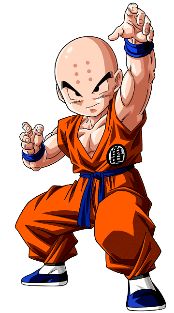
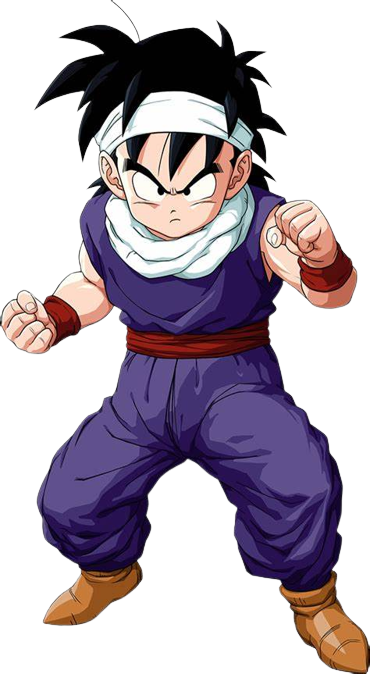
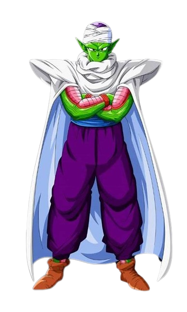

Es el primer rival en artes marciales de Son Gokū aunque luego se convierte en su mejor amigo. Mide 1'57 y pesa 55 kg. Su nombre proviene del japonés castaña (栗 Kuri?) y la terminación de shaolin (少林 Shōrin?). Características Es un artista marcial de baja estatura y carente de nariz. Lleva la cabeza rapada por su entrenamiento como monje en el templo de Oorin y seis puntos tatuados en su frente (que más tarde desaparecerían al dejarse crecer el pelo). En su juventud su inseguridad le afectaba negativamente en los combates y que al comienzo lo llevaba a mentir y tratar de engañar a Goku y a su maestro durante los entrenamientos, pero Krilin posee un gran potencial como luchador y de hecho Yamcha reconoce que es el humano más poderoso, aunque al final del manga aparecería Oob el cual sería más fuerte que éste. Entre sus numerosas hazañas podemos contar el buen papel que hizo al participar en las 21º, 22º y 23º ediciones del Torneo de las artes marciales, llegando a semifinales en las dos primeras ediciones y a cuartos de final en la tercera, además de defender la tierra de los Saiyajines y cortarle la cola a Freezer

En un inicio Gokū o también llamado Kakarotto aparece como un joven artista marcial con cola y fuerza sobrehumana,5 más adelante en la historia se revela que es un extraterrestre de la raza ficticia Saiyajin y que su verdadero nombre es kakaroto.6 Su nombre proviene de Sun Wukong, un personaje de la historia china Viaje al Oeste,7 y su nombre Saiyajin, Kakarotto (カカロット?), proviene de una deformación del inglés Carrot (キャロット Kyarotto?, zanahoria).8

Son Gohan, pronunciación japonesa: [sõŋgohãɴ] es un Saiyajin mestizo y uno de los personajes más destacados de la serie Dragon Ball. Es el hijo mayor del protagonista principal de la serie, Goku, y su esposa Chi-Chi, el hermano mayor de Goten, el esposo de Videl y padre de Pan. Lleva el nombre del abuelo adoptivo de Goku, Gohan.
